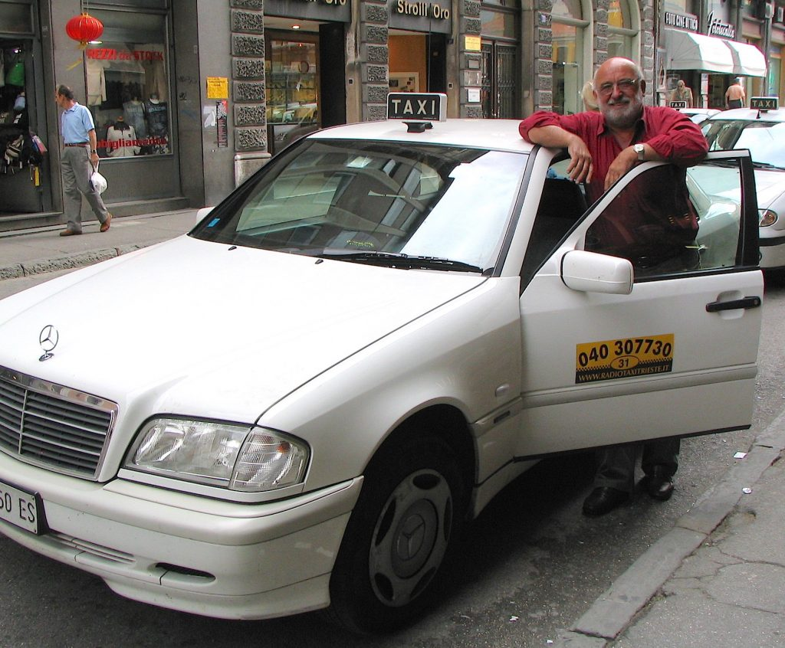

Italian taxicab
Taxicabs are definitely the easiest solution for short rides, but at the same time, also the most expensive. However, if you’d like to experience high adrenaline levels in your body, then take a cab driven by a real Italian driver and enjoy your ride. I assure you that you will never forget it…. When you reserve a cab by phone (taxi company phone numbers vary from city to city), you will receive the number of the taxi that will pick you up. The taxi number is displayed on the car's door. Now it is also possible to reserve a cab via text (SMS). Also in this case phone numbers vary from city to city. Check online to see which companies offer this service. At the time of this writing Uber is available in the following cities: Rome and Milan. In Italy, each taxi must have the sign “taxi” displayed on the car, a number (numero) and especially a meter, although taxi drivers are not required to have a badge with their photo. Taxis are usually white or yellow. {This is an excerpt from chapter 1 “General Transportation” of the eBook “Italy from the Inside. A native Italian reveals the secrets of traveling in Italy”. Buy our eBook on Amazon and leave us a review! If it’s good, you’ll make us happy, if it’s bad, you’ll make us improve. Thank you either way!}